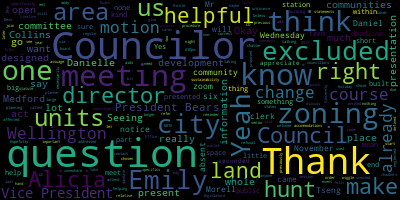
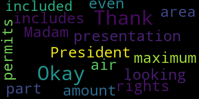
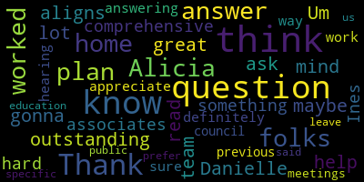
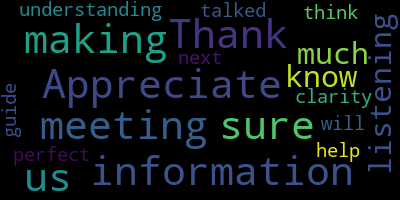

[Morell]: Okay. Uh. 23448 Committee. The whole meeting met for City Council notice Wednesday, November 29th 2023 at 6 30 P.m. Meeting is called to order. Mr
[Bears]: Sorry, vice president bears is present. I'm in the office next door. He's in the office.
[Hurtubise]: So I heard him yell present council care of yellow president. Councilor Collins present Councilor night Council night is absent Councilor scarpelli present.
[Morell]: Councilor saying, President, President Morrell present six present one absent. There will be a meeting of the Medford City Council committee the whole on Wednesday November 29 2023 at 630pm via zoom only the purpose of this meeting is to discuss the MBTA community zoning ordinance. The committee has invited Alicia hunt director of the Office of planning development sustainability and senior planner Daniel Evans to attend this meeting. For their information aids and accommodations contact the city clerk at 781-393-2425. Sincerely yours, Nicole Morrell, Council President. So as the notice states, this is designed to be sort of an information session for the proposed zoning relative to the MBTK communities. Act so that came before the council at our not this not last night but our previous regular meeting that by procedure and statute we refer to the CD board. It is something that has an end of the year deadline and as was presented by director hunt to us, there's a lot of specifics that came down from the legislature. So there's not a whole lot of wiggle room communities have Medford any community affected by this. So I know we have Emily Ness, a consultant that's helping the city that has a presentation for us. And I just want to make sure that due to the short timeline, we can have counselors that have questions, concerns, have those addressed. Hopefully folks can join us from the public. I know meeting on zoom only and a little bit later, because there's the holiday event that's taking place in the chambers right now, but we are still on deadline for this. So it's important that we meet. Unless counselors have questions or statements before we start, we could hand it over to Emily to give us a short presentation. Seeing none, Emily, I'll let you take it away.
[Ness]: Great, thank you very much. And thank you counselors for your presence tonight. I'm hoping that this will be informational for you and set you up for a successful discussion and public hearing next month. I'm going to quickly share my screen, but as I do so, I want to let you know that I have worked in Medford before. I was part of the team that did your recent comprehensive plan. So it's a pleasure to be working with you again on this, on the MBTA Communities Act. Alicia and Danielle and I have been going back and forth, first checking the work that was done earlier this year on the compliance model, and then turning that into draft zoning, as you said, for sending to the CD board and then obviously to yourselves. So I know you've received some information about the MBTA Communities Act, so I'm not going to go into great detail on the act itself, what it is, why it is, however you have questions on that. I'm happy to answer those to the best of my ability. What I want to focus us on today are the three components that go into compliance. So those are land area capacity, meaning unit capacity and zoning. Talk to you a little bit about what those are, what we're looking for, and then what Medford's requirements are and the current draft zoning that the CD board will be taking up. And then talk to you a little bit about next steps and how people can get questions and comments either Alicia and Danielle to the CD board or to myself. So land area, it's a geographic area of the proposed district. It includes the location of the district, the size, whether or not it's adjacent to transit, which is critical for you as a rapid transit community, and whether or not there's excluded land, which is land that can't be counted for unit capacity. And we'll talk about that a little bit later. Capacity is the number of dwelling units that can be potentially, that will be zoned for, which is different from production. So we call this unit capacity, and it is a function of the land area and the zoning, how the two of those work together. So it's unit count, the density measure of the number of units per acre, and also the requirement for adjacency to transit are all components of unit capacity. And then finally zoning, which is really the rules under which we can build and have uses. That's a function of the land area and the capacity together. So you can see that these three things work together. That's really important when we're demonstrating compliance because it means that we have to demonstrate compliance across all three of these categories. And so when we think about zoning, we're thinking about uses, lot sizes, other dimensional standards, such as open space requirements, setbacks, parking, and any density restrictions. So Medford's minimum land area requirements, it's a minimum of 35 acres. I will say I haven't yet worked with a community that's gotten close to its minimum because in terms of being that low, because the minimum number of acres is very much related to how densely people want to see development happen. And so many communities are thinking about if we have more acres, does that allow us for a lower level of density in some areas? There's a lot we can talk about in terms of strategy. You are required to have 75% of your MBTA district in a station area, which is consistent with the fact that you have both Orange Line and Green Line stations. And 50% of your total district size must be within that transit area. So, or sorry, it must be a single contiguous district, my apologies. So that's a strategy that some communities are using if they're thinking about more than one district area. In your case, as you'll see, that's not currently applicable. So for the purposes of the zoning that will be coming before the CD board and before yourselves for the public hearing, We are looking at the Wellington T Station only. I'm going to go through the reasons why. But you can see Revere Beach Parkway here and the Felsway here. And then this is the orange line with rough location of the Wellington T Station. These parcels in white are the parcels that are included in this draft zoning district. And I'll walk through them. But one of the main reasons for starting with this particular district is that Medford is a rapid transit community. And as the president of the city council mentioned earlier, you have a deadline of December 31st of 2023 to submit your zoning to be in compliance. And that's not a lot of time to look into some of the other areas of the city, many of which are already primarily built out. A lot of single family, two family, et cetera, residential in some of those areas. Those are the types of areas that if you're going to add density and there could be good reasons to do that, but it might require more significant community conversations. And so as we'll talk about a little bit later, there are good reasons to address housing needs in those parts of the city. in a different way. So part of the discussion here is you've got a tight timeline. Another good reason for this area, and you can see by this orange blob, which is your half mile of the train station radius, is all of the district that we're looking at is within a half mile of this train station. And so that means that you are more than that 75% compliant in terms of locating the district here. So that makes it a good reason to think about this. Another reason is that you've got a lot of existing height in this area, which means when you think about putting a, um, perhaps a greater concentration of housing in one area, um, you can see that you've, uh, contrary to other parts of the city, you've got a lot of height here already. So these numbers are the building heights on these different parcels and they range from a building height of one. which will be important as we all the way up to a building height of 11, which I counted three times just to make sure I got that right. But so there's significant height in this area and that does mean that should you pass zoning that allows for more height, which this does, that height would comfortably fit into this district and obviously allow for more units. The other part that's interesting about this, and I think it's an interesting strategy. I've been working with a lot of MBTA communities, and each community is thinking about how the MBTA Communities Act can best help them with their own housing needs. And I think one interesting part of this strategy is, although you do have a lot of development in this area, and it's unlikely that much of this development will change. To just jump back a little bit, you're seeing multifamily heights of six to eight stories already. I think there's a hotel in here that's about nine stories. These taller buildings are unlikely to change. They form a nice, in this particular area, they form a nice buffer against the neighborhood of unlikely to change. But if you look at some of the lower building heights here or the extent of the parking here or the possibility of change there, what that says is that with the right zoning, these parcels could change to something else. Clearly they haven't done so, so far, because there hasn't been a good incentive. This strategy of saying, hey, we need to think about the MBTA Communities Act. How could that help us create better value for parcels in this area to encourage them to meet the zoning or the, sorry, the existing built environment by giving them some additional incentives is a very good reason for considering this particular area. And then finally, this particular area provides one component of an overall housing strategy for the city. And I wanted to circle back to this idea that yes, you have other transit stations, they each have an existing built environment around them. Medford has housing needs across a range of building types and unit types, across a range of incomes, across a range of how people want to be able to live in different housing products. The MBTA Communities Act can address some of that. It can provide for a certain type of housing unit, it can provide for sort of workforce to market rate levels of affordability, but it's not a one size fits all strategy. You will be looking at doing an overall comprehensive review of your zoning and there's an opportunity within that to do some more of those neighborhood based strategies that would allow you to think of the different areas of the city. So again, considering the timeline, the location, the ability to allow some of these parcels to change, this seems like a good strategy. So that's the geographic area. Let's talk a little bit about the unit capacity. So your minimum unit capacity, which is based on the 2020 housing units from the US Census, is 6,443 units. Again, 75% of these need to be located in the station area. So if you think about the other station areas in Medford, yes, you could always choose to spread it across those, but just thinking about what the existing built environment is around there. And you do have a minimum density requirement of 15 dwelling units per acre. So this is where the unit capacity, the geography, how big or how small the district is, and the zoning start to play a role Now I mentioned something called excluded land at the beginning. And excluded land, which is the land that you see here in green, cannot be modeled for unit capacity. You can see there is some excluded land, including the T-zone property. So that means that when you do that, the density on the remaining parcels does have to be higher to get you to the overall density level. You can see what excluded land is. There's also something called sensitive land, which is the blue diagonal hatching that you see here. This is land that the state calls out and says, you can model it for unit capacity. Your community may or may not have rules or regulations around building. So for example, floodplains, some of the secondary wellhead protection areas. So we're just calling out so you can think about whether or not you want to build there. In this case, you actually have very little sensitive land in this area. It was nicely drawn out by the previous consultant team to really exclude the sensitive land. And then obviously you do have some excluded land. So that factors into your density requirement. You'll see that in a minute. So you more than meet your minimum land area. You actually have 136 acres and that's important because you have so much excluded land in there. You more than meet your station location. And we're running two different scenarios now scenario one is the zoning that was presented to the CD board. Scenario two, I think one of the members had asked, could we just change a couple of dimensional ratios just to see what it would do. So I'm showing it to you to show that there are a couple of different ways to be compliant. I'll show you to what we can and can't change to figure that out in a minute, but you're compliant for both scenario one and scenario two. Your minimum unit capacity is 6472, so you are about as close as you can mathematically get to that minimum unit capacity. Again, 100% of those are in the station area. And your minimum density requirement, because you have so much excluded land, is actually quite high because that land is taken out of the density requirements. So this number of units is actually spread across the smaller smaller land areas that are not in green here. Now, I do want to stress that unit capacity, zoned unit capacity is not the same thing as a production target. In other words, the city does not have to produce these amounts. It's understood through the legislation and the zoning that as with any zoning, it is up to the private property owner and the private market to decide whether or not they're going to take advantage of that zoning There are certainly ways of creating incentives to encourage housing production in the areas that you want to produce housing. And in fact, there's some incentives built into the zoning. So this is the final component. This is the dimensional standards in the current draft that's in front of the CD board. So you have a minimum lot size of 10,000 square feet, a minimum height of two stories, because this was really an area that should have higher buildings to match what's already there. a maximum height of five stories, but there is, and that five stories is what is tested in the compliance model. So you are compliant at five stories. The maximum height with incentives that allows for that increased density with some public benefit incentives that are built into the zoning that goes up to nine stories. So, and it's a story per incentive. You have a maximum building coverage, so the amount of lot area the building can take up is 80%, and then your minimum parking of 0.8 spaces per unit, which is what is tested in the model, or 0.5 spaces per affordable unit, and a maximum parking of 1.5 spaces per unit. So that's the zoning itself. These can be changed slightly, but just understand that if they are changed, We have to go back and run the compliance model because these are feeding directly into it. So just be aware that there are some things that went in zoning when you change them, you can change them, but there are other things that when you change them, it might speak directly to compliance and that these are among those, the minimum lot size, the maximum height, the maximum building coverage and the minimum parking in particular. And then finally, and I'm happy to go through and talk to you about or answer any questions that you have, but just know for anybody watching that the CD board meeting is next week on the 6th. Your public hearing, of course, as you know, is on the 12th and a possible continuation to the 19th. If any of you or anybody who's listening has questions, please reach out to Alicia and Danielle. You can see their email addresses there. If there's anything that I can answer, they'll shoot them over to me. And of course, I'm happy to respond. And if you have comments, you can either submit them directly to Alicia and Danielle, or even better, attend to the CD board meeting. And of course, that applies to all of you, as well as to anybody who might be listening. And that's the overview. I'm happy to go back and answer any questions either on the presentation or if you have other questions about the MBTA Communities Act and the implications, I'm happy to answer as much as I can.
[Hunt]: And Madam President, before we opened up to the councillors, I just wanted to emphasize this one piece, that there is a public hearing that's been advertised on this for the council in a few weeks. And so it would be better if there's not pontification and deliberation tonight, but rather questions, clarifying questions And if anybody actually would like to see changes or would like to discuss their opinions with me or Danielle or even Emily, we're happy to take that offline outside of a public meeting. Or you could bring them to the CD board, especially if you wanted to see different things modeled before the council meeting opens. I'm happy to discuss those. I just wanted to be careful that what we're doing tonight isn't in violation of public like open meetings so that we're talking about, we're answering questions, we're making sure people understand what's in front of them, and not doing the deliberation that needs to happen at the public hearing on the 12th. Does that make sense? Yes.
[Morell]: Thank you, Director Hunt. That's a helpful reminder. And thank you, Emily, for that presentation. So I will open it up if councillors have any questions. Councillor Collins.
[Collins]: Thank you, really appreciate the work of the planning staff that went into this. I know there's been a lot of back and forth with the state, so thank you for staying on it for many months to make sure that we can be in compliance and really appreciate the presentation as well. Emily, thank you for being here. I was hoping, could you speak a bit more about the maximum height with incentives piece, how that works, how those triggers kick in? That's not feeling super intuitive to me. If you could walk us through that, I'd really appreciate it.
[Ness]: Absolutely, I'm happy to. And obviously, Danielle and Alicia join in as necessary. I'm just pulling it up on my screen. So I have it in front of me. Nothing worse than trying to remember zoning without it in front of you. So there's a couple of things that, you know, in kicking these ideas around with Alicia and Danielle and the previous work that they'd done. One important thing to remember is that it's multifamily as of right. So that means you cannot mandate a ground floor commercial use. And so what this zoning does, and this is common in a number of places, is create an incentive of an additional story above the five for a ground floor commercial. You already have that in that area. It makes sense to create that incentive, And it allows for the possibility of a district that is mixed use in terms of verticality. In other words, you have the ground floor commercial and multifamily above and next door to it could be a full multifamily building with no ground floor commercial. but this incentive creates the opportunity to get that ground floor commercial. There's a couple of others in there that are more community benefits. So there is an additional story allowed if a minimum of 50% of the ground floor provides rents at less than market rate, less than 15% below market rate for a minimum tenancy of three years to help fill those commercial spaces. One of the reasons the state did not allow for a mandated ground floor use is that in some communities, filling that commercial space has been really difficult. So instead of getting that active walkable area, you are getting a vacant space on the ground and residential above, and none of us want that. So that additional story allows for a tenant to come in at a reduced price. And it's qualified tenants. qualified non-residential tenants going in there. So nonprofits, local businesses under 10 employees, the idea is that it provides an incentive to fill it, but also an incentive to fill it with local or nonprofit generating that traffic. And then there are some additional stories for affordability requirements. I mentioned earlier that really the MBTA Communities Act is not a solution for deep affordability. 80% AMI for 10% of units at 80% AMI. For many communities, that's not quite enough for what they're looking for. So there's a structure, an incentive structure here to allow for either more units or a deeper affordability and or a combination of the two. There's also certification for a net zero emissions building. So consistent with Medford's commitment to energy efficiency and sustainability, and a bonus for a development certified as LEED Gold or LEED Platinum or the equivalent. And so the idea is by allowing that differential between the five stories and the nine stories, there's a menu that a developer could pick and choose from that really speaks to community benefits that have been important to Medford.
[Morell]: Thank you. Does that cover your questions, Councillor Collins? It does. Thank you very much. Any other questions from Councillors? Vice President Behrs.
[Bears]: Thank you, Madam President. Emily, just so I can clarify this as well, this is an overlay, so the existing zoning still exists in the area. Seeing the nod is correct. And so we, Alicia, if I'm misremembering this, please let me know, but we passed a PDD for the property on Mystic Valley Parkway, or was it just a zoning change?
[Hunt]: It was a zoning change for that parcel to be in the Muzz zone.
[Bears]: Muzz zone, right, okay, got it. And so, yeah, so I was just noting that some of the properties that you noted as more likely to see change. We've actually already seen potential proposals or requests for zoning changes on them. And this is an overlay. It wouldn't change it or affect those. It just allows, yeah. So cool. Great. Thank you.
[Morell]: You're welcome. Thank you. Any other questions from councilors? I do have one or two questions. So I'm talking about the excluded land. So the excluded land is about specifically about the station area. It's not the city at large, because I know I think of like the fells, we have like a lot of excluded land, but it's just the area, the land within the station area, or the zoning area that's been chosen.
[Ness]: So I'm glad you asked that question. Excluded land is a layer that was created by the state, both the excluded land and the sensitive land. And they calculated it or prepared the GIS shape files for all 177 cities and towns for the entire area of the town. So the idea is that any place that a town or a city might choose to test, you would be able to calculate the excluded land. So yes, the fells would be included. any of the parcels that meet the criteria that I had up, I'm happy to put them up again if needed. Those would be shown on the maps. I actually have a map of all of Medford's excluded land. Where it comes into play is in the parcel by parcel calculations of unit capacity. Essentially, that excluded land is removed from those calculations. the ability to build is being calculated on the rest of that parcel. It also feeds into the overall calculation of density of the dwelling units per acre. But if you were to move the area somewhere else, then I would have to do a calculation of the excluded land that's removed based on that geographic area as opposed to this one.
[Hunt]: And one thing I want to sort of clarify, because it's funny, is that the excluded area is technically only in the MAF, but it is still in the zoning overlay, because the MBTA station itself is of particular interest to Medford. And so it's not calculated in our MAF, but this overlay does in fact apply there, so that if in fact we're doing the air rights project, this zoning would be in play at that location. So it's not that it's excluded from the zoning, it's only excluded from the math. Does that make sense?
[Morell]: So it's not, yeah, so it's not necessarily excluded in that nothing can ever be built there. It's excluded. Okay. Is there somewhere that we can see, because excluded, this is like a term that was defined within the act. It's not like a previously used term, correct?
[Ness]: Correct. It's in the compliance guidelines. There's a definition of compliance guidelines. And if you drill down into the section on how to run the compliance model, it's further defined and explained there. And Alicia is absolutely right. The model and the zoning differ on certain aspects. So the model is there to calculate the unit capacity and the density. as Alicia said, the zoning applies to the whole, so should the ownership of a parcel change at some point, or for example, your transfer of development rights or the air rights change such that that parcel could be developed, it's not going to affect the unit capacity calculations for compliance, but it will be subject to the zoning.
[Morell]: Okay, thank you. Danielle, did you have something you wanted to add? Do you need to be unmuted?
[Evans]: Great. Thanks.
[Morell]: Yes.
[Evans]: Danielle Evans, senior planner. Yeah. And when we were and to go back to the excluded land issue, when we're evaluating the other potential station areas, we were bumping up against a lot of excluded land over there, too, especially around the new Green Line station is surrounded by land owned by Tufts. So that's excluded land. And it's just all these other areas like this. It was. all of these different metrics kind of pushing us in.
[Morell]: Thank you. Yeah, that's really helpful to know because I think there's been some chatter on Wellington being kind of a neglected part of the city. And of course, here's a big change. They just chose Wellington because no one cares about Wellington. So I think that's helpful information. And then just one quick question for maybe ends up being longer just Alicia and Danielle and then I'll make sure to go to other counselors. I think one thing that's been said as this has been presented to kind of help assuage just that this is a big change is that this of course this is a zoning change this does not mandate, the building of any of these units. But of course, we make this zoning change then it is open, you know, it's open for anyone to present a development and because it is on this way. There is little space for. I don't want to say refusal but I mean people can develop these things, stuff by right that's that's how it's designed right so I just want to. make clear on that because I think we go we say this is just zoning it doesn't mean units but in a place like Medford and this is how it's designed because we're zoning there's very likely development to follow.
[Hunt]: Right, and that's actually why we asked Emily to share that image and we can share it again and share slides if that's helpful. Of the parcels that we think are either really, really gonna change, like the one that we just rezoned, that is extremely likely that that is going to have a new housing development on it, whether or not we do the zoning in the near future. And there are ones that are just pretty likely right like from that to like, it makes sense we haven't talked to the owners but but there's space it would make sense there, why we're showing which ones are likely and which are kind of not likely nobody's gonna knock down station landing to take advantage of this that's just not happening. So we wanted to show that and both sorry there was something else in there I just wanted to. touch on was the likelihood of this happening. I apologize if I think of it. I'll come back to it. Thank you.
[Morell]: I appreciate it. Go to Councilor Carvillo.
[Caraviello]: Thank you, Madam President. And looking at the presentation, so the maximum amount of permits would be like 6,500 in that area.
[Ness]: Just under, yes, that's correct, that unit capacity.
[Caraviello]: Okay, and that includes even the part where we have the air rights, or is that all included in there in that same?
[Ness]: That land is all included within there, yes.
[Caraviello]: Okay, thank you.
[Ness]: That's my understanding.
[Morell]: Thank you, Councilor Sang.
[Tseng]: Thanks, I think Alicia and Danielle read my mind on a lot of the questions that I was gonna ask. Um, the outstanding question I think for for folks at home, that would be great for maybe for for your team to help answer what would be how this plan aligns with our comprehensive plan. I think. you know, that's it's something that we worked so hard on. I know we we worked with Ines associates on it. So I think this is there's there's definitely an answer to this. But I think folks at home would appreciate hearing more about it.
[Ness]: I didn't know, Alicia, if you wanted to jump in first on that, if you wanted me. Yes, Wellington was one of the areas that was looked at in particular in the comprehensive plan. I think, too, when we were starting to talk about that bonus strategy, that very much aligns with many of the goals in the plan. But I think we could certainly bring that link out more clearly to people. So thank you for that question.
[Tseng]: Thank you all for your work, by the way, and thank you for answering questions. I know, I'm sure at previous council meetings, we've had a few more specific questions, but I know Alicia said that you prefer us to leave this for public education, so.
[Hunt]: We're happy to get into the questions that you guys have. I want people to either know enough or feel like they're going to have enough information that when you get the CD board recommendations that you can vote on this. And I didn't feel that everybody wanted, I got the impression from the counselors you didn't want to take an hour and a half at a city council meeting if we could do some of this prep. This will also give you a good chance to sleep on it. If you have the opportunity to watch the CD board meeting on the six. That'll also, I think could could give you information help you get a more robust understanding of what the counts with their thinking. And I'm going to answer Councillor Scarpelli's question in absentia. So we have reached out to a number of the property owners and developers who either own land in this area or have been thinking about developing in this area and sent them this draft and told them about the CD board public hearings and the council public hearings. and told them that we are inviting their public comments, they're welcome to send that to me. through me to the boards and council, and that we would share that with everybody. And if they have any questions on it, I'm still working on getting, basically we've sent it to all of those who we have had some interaction with over the past number of years, so that I had their contact information. I actually am asking one of our graduate students to look at the properties whom we don't have contacts for if he can figure out their information so that we can send it to them. This is public, feel free to send it to anybody. If you know developers or whatever for any reason, we want this to be something they can use. We want them to build some housing. Please get their feedback, help us get their feedback.
[Scarpelli]: Appreciate that. Thank you so much for that.
[Hunt]: Oh, you're here, sorry. I didn't mean to speak for you. I didn't realize you were here.
[Scarpelli]: I'm listening and I appreciate that, you know, understanding this with clarity and making sure like we talked about, making sure that the information is out there. And I think this meeting is perfect because it is the information that will help us guide us for our next meeting. So thank you.
[Morell]: Thank you both. Any other questions from councilors? I do have one more question. Director Hunt, I know you've explained this to us before, but just help me. I promise I'm not being obtuse, but I know when we talk about the number of units in an area like Wellington, some of those units already exist, or what is that? Like some of those units are already factored into the calculation. Could you explain that again?
[Hunt]: COB, Bethany Collins — she-her-hers, she-her-hers, she-hers, she-hers, she-hers, she-hers, she-hers, she-hers, she-hers, she-hers, she-hers, she-hers, she-hers, she-hers, she-hers, she-hers, she-hers, she-hers, she-hers, she-hers, she-hers, she-hers, she-hers, she-hers, she-hers, she-hers, she-hers, she-hers, she-hers, she-hers, she-hers, she-hers, she-hers, she-hers, she-hers, she-hers, she-hers, she-hers, she-hers, she-hers, she-hers, she-hers, she-h the number of units that could be built with given this parking ratio, the number of stories, the setbacks required. That's what could be built as of right, which reminded me of the other point I was going to make, which is site plan review. It is not what we actually think will and could be built because we don't we believe that nobody's going to knock down, for example, like I said, station landing. Right, so that 6,400 is if all of these parcels were clear and free, that's the number that could get built. Okay.
[Evans]: I'll add on that through the president. I don't think we've looked at this, but I would bet that some of those parcels actually have more units there already than what the zoning would yield. So it doesn't play into what is there at all. zoning could conceivably yield because I think some of those developments were built by use variances or they've been there for so long. I'm not sure how some of them got to be there in the existing zoning.
[Hunt]: And that's actually what I thought we should clarify is that this zoning would allow buildings of a certain size to be built as of right if they meet these parameters. But any buildings of these size in Medford would still need to go through site plan review. So there would still be a review by the planning board to look at their site layout, the look and feel of the buildings, the accessibility around it, the transportation, the plantings, the green space, all of that. would still be reviewed and shaped by the Community Development Board, but the board could not tell them, no, you're not allowed to build the building. They could only say, here's how we would like you to improve this building. So I just want to be clear, they could build it as of right, but we would still have some say in the matter.
[Morell]: Thank you. Yeah, that's really helpful. I think that's what I was circling on without the words to ask it, so I appreciate that. Vice President Behrs.
[Bears]: maybe just said a slightly different way, many of these units already exist, right? Like that, you know, essentially of that 6,500, I don't know what the number is, and you guys may have calculated, I would bet there's probably a couple, 3,000, maybe even more than that already in that zone. So, yeah, I think that's just a helpful clarification.
[Morell]: Yeah, and I think that's, you know, my interpret or I received part of that is like, this is what happens when you write an act for such very different communities. And we're already Yeah, we're already pretty built up in many spaces. So any further questions from counselors? Or any members of the public who have questions or would like to speak? All right, seeing none, Alicia, Emily, Danielle, is there anything final you'd like to say as we're here tonight, knowing we're of course going to meet on this a few more times?
[Evans]: I just want to add that back to Councilor Sang's question about like how this aligns with the comprehensive plan and The act, the MBTA law doesn't actually, but the way that we've crafted the zoning to fit Medford with these incentives, so that we can meet our affordability goals, which the MBTA law doesn't address. And we're actually doing an economic feasibility study so that we can even use our existing inclusionary zoning, but that won't be finalized. I just saw an email from MAPC who's doing it that it's delayed and we won't get that till the third week of December. But hopefully it will come out that we can use our existing inclusionary zoning. But also the incentives are for our climate sustainability goals and economic development and having these be walkable, vibrant areas. in addition to creating much needed housing.
[Hunt]: Thank you. And I just want to add that when you all go and think sleep on this, if other questions come up, you want other things clarified, I'd actually strongly encourage you don't wait for that city council meeting on the 12th. We would rather hear them and address them individually in advance so that by the time you're walking in there, you really have the information you need to make decisions. We don't want to rush the council. On the other hand, the state has really, they do. So what we're trying to do is make sure you have the opportunities to get these questions answered in advance. And if you want us to then say, present certain things, you ask me a question, you want the public to hear it, so you want me to repeat the answer at the city council meeting, that's fine. I just would hate for us to walk in, you have a bunch of questions, and then we have to go do research to get you answers. I want to avoid that situation if I can. Thank you, appreciate it. Vice President Farris.
[Bears]: Thanks, and not to belabor the point, but Danielle, if you could just explain a little more why do we have to get the existing inclusionary zoning reassessed for viability. Is that a condition specifically of the MVTA Communities Act?
[Evans]: Yes. And they actually, when I first saw the guidelines that came out, I instantly was emailing our our state delegation saying, this is nuts. I can't believe we can't have inclusionary zoning at all. Like at first it was, you can't do it. You can't have it. And then it was like, okay, if you already had it, then you can, but only, and then it was like, you had to really justify it. And then finally they said, okay, 80% AMI, 10%, You can do that. Finally, they agreed, yes, everyone can do that. But they agreed that this is the floor. But if you want to do more, you have to have an economic feasibility analysis. So despite the fact that our inclusionary zoning is stronger than what is allowed, we're not grandfathered in. We can't keep it. We have to prove that this isn't hindering housing production. And at first, my naive self of, I don't understand this, but then realizing that apparently there's communities that create like really.
[Morell]: Yeah.
[Evans]: Yeah. And so, and basically, they're doing it in bad faith. It's not to create affordable housing, it's to not have any housing get built. So, right. Because it's a law for all 177 communities, and we're all very different and coming at it from different angles. But because of some bad actors, it has to be this way.
[Bears]: Yeah. I mean, and that I understand. I've heard of that. I've heard of communities using inclusion areas as a barrier to construction. Obviously, there's some political benefits there, maybe in different areas. I don't know, it's just, I'm interested to see, I'm interested, I think, as we go through the process in this broader sense of looking at the zoning and aligning with the comprehensive plan, obviously inclusionary is gonna be important. And I'm kind of interested to see what the economic feasibility analysis says, not so much for this purpose, but for that purpose. So yeah, but thanks for answering the question.
[Morell]: Thank you, Vice President Behrs. Any further questions or do I have a motion? Seeing no further questions, do I have a motion to receive and place on file?
[Bears]: Motion to adjourn.
[Morell]: Great, so I have a motion from Vice President Behrs to adjourn, seconded by- Seconded. Councilor Collins. Mr. Clerk, please call the roll.
[Ness]: Vice President Behrs.
[Hurtubise]: Yes. Councilor Kerrio. Yes. Councilor Collins. Yes. Councilor Nunez is absent. Councilor Scarpelli. Yes. Councilor Seng. Yes. President Morrell.
[Morell]: Yes. Six in the affirmative, zero in the negative, one absent. Motion passes. Meeting is adjourned. Thank you so much, Emily, Daniel, and Alicia. Really very much appreciated. And thank you, councilors, for excellent questions.
|
total time: 6.02 minutes total words: 1047  |
total time: 2.12 minutes total words: 348 |
total time: 0.48 minutes total words: 101 |
total time: 0.21 minutes total words: 48  |
|
total time: 1.02 minutes total words: 148  |
total time: 0.31 minutes total words: 60  |
||
{kind=link}
{kind=link}
{kind=link}
{kind=link}
{kind=link}
{kind=link}